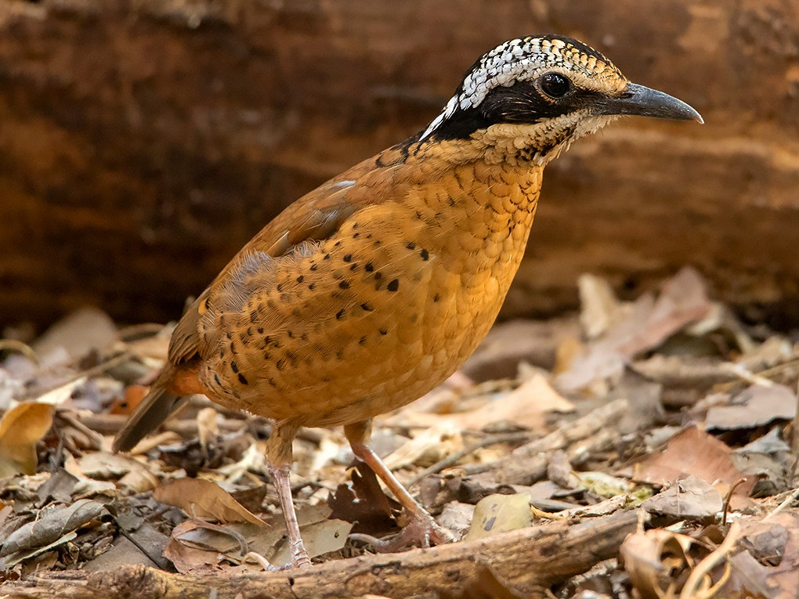

Hydrornis phayrei
The Eared Pitta is about the colour of a chocolate chip cookie. Only the warmer-coloured male is "eared", with the speckled silvery tufts on either side of the head. The darker female has lot's of black speckling on the underparts.